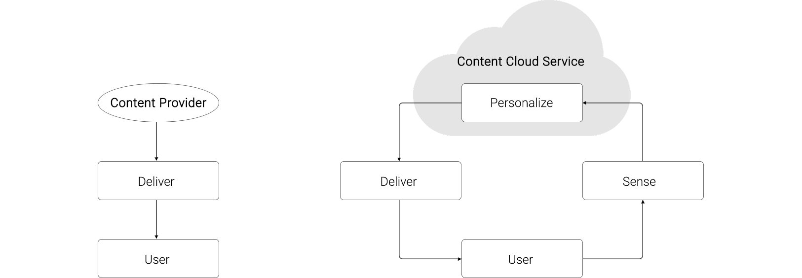
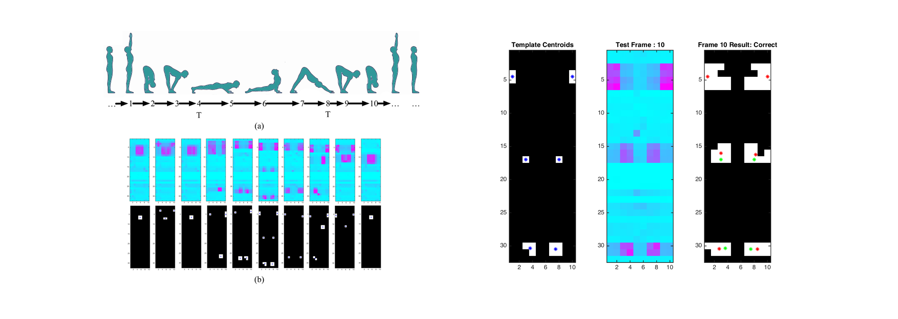
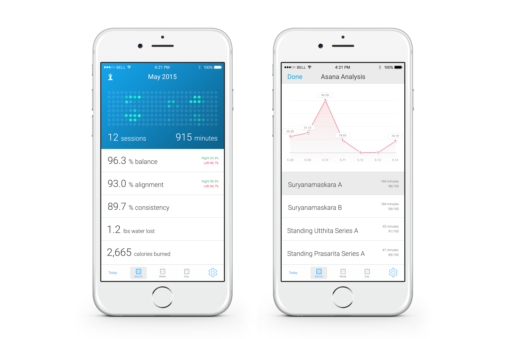

User experience is not a layer or component of a product or service. It's about the design of whole systems and their interconnections. The xLAB: Experience Design & Techology Lab explores new ways to interact with digital information in physical space.
SonaMat is a fitness mattress that provides personalized fitness guidance. The system is comprised of four components.
Current content distribution networks provide limited interaction for fitness and wellness activities. The delivery is one-way only and the modules are the same for all users.

The goal of SonaMat is to measure the user's movement, evaluate, and adjust the delivery of the content based on performance analytics. Below is the SmartMat's demo video. This project is not affiliated with the SmartMat.
Below describes the ideation and execution process. Download our paper published in IEEE to view technical details.
1) I built a mattress with thousands of pressure sensors to measure the user's movement, and light sensors to provide spatial guidance. 2) I collected data and defined optimal sensor resolution. 3) I developed pose recognition algorithm that evaluate user's performance based on body metrics including height, weight, and Ape index.
4) I oversaw the delveopment of an infrastructure and a web app that allow content provider to create adaptive fitness content by tagging content with actuation signals.
5) I designed a mobile app that provide personalized feedback.

6) I followed Design for Manufacturing (DFM) principles to bridge the gap between conceptual prototype and manufacturing of the physical interface.